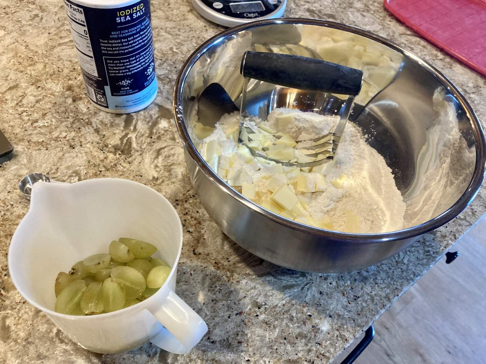
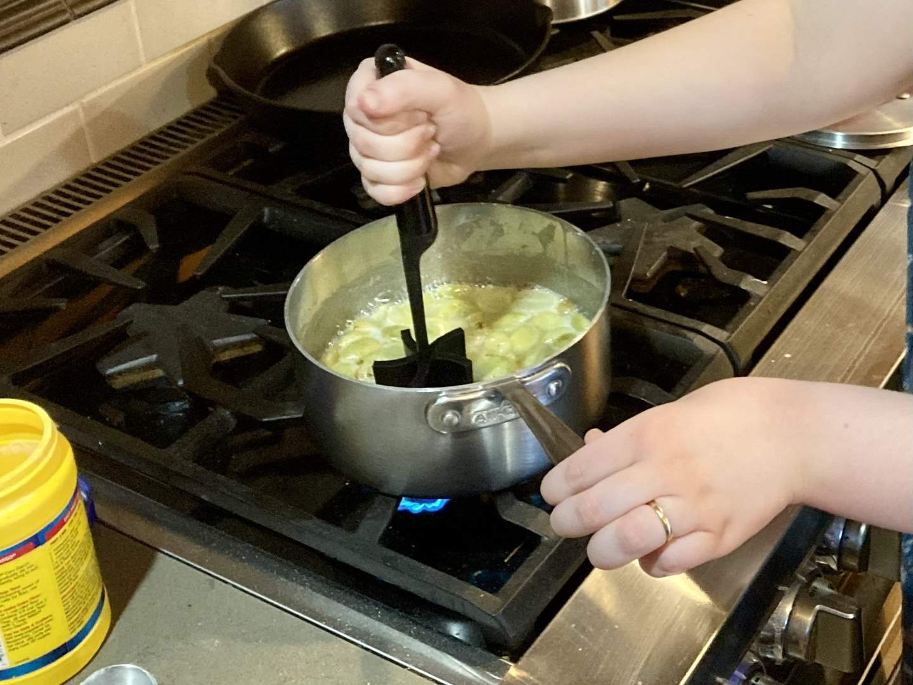
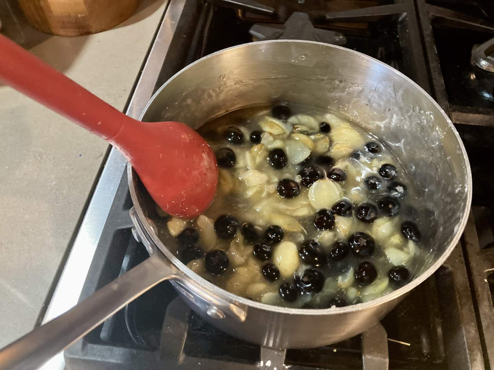
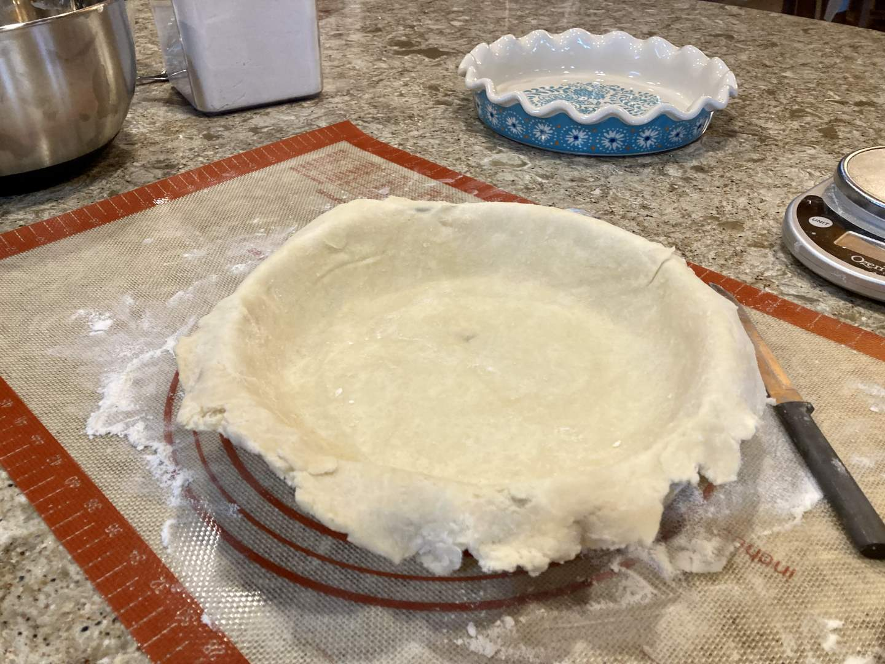
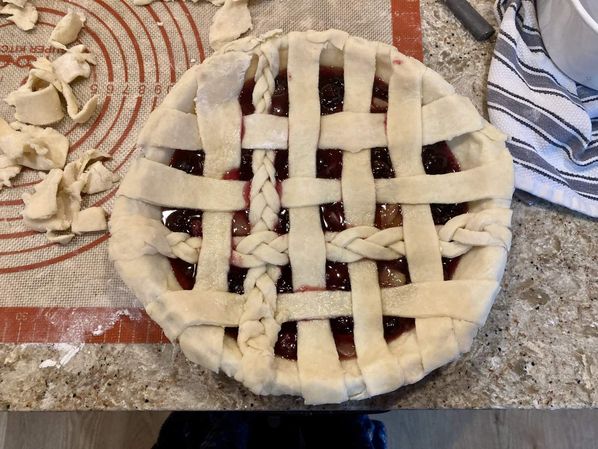
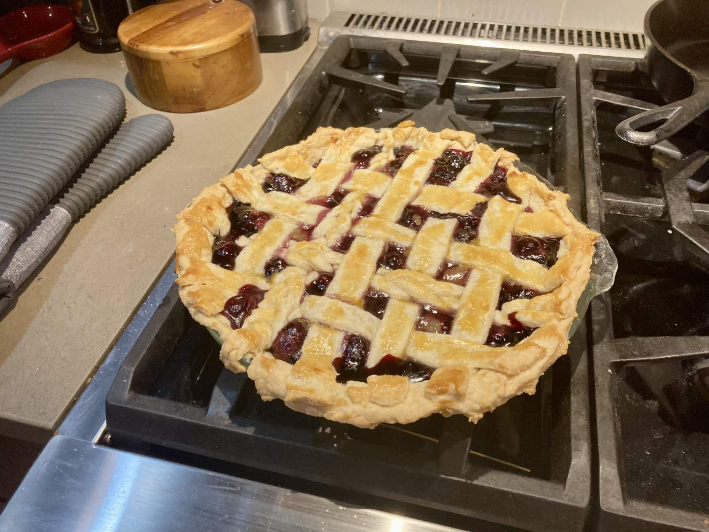
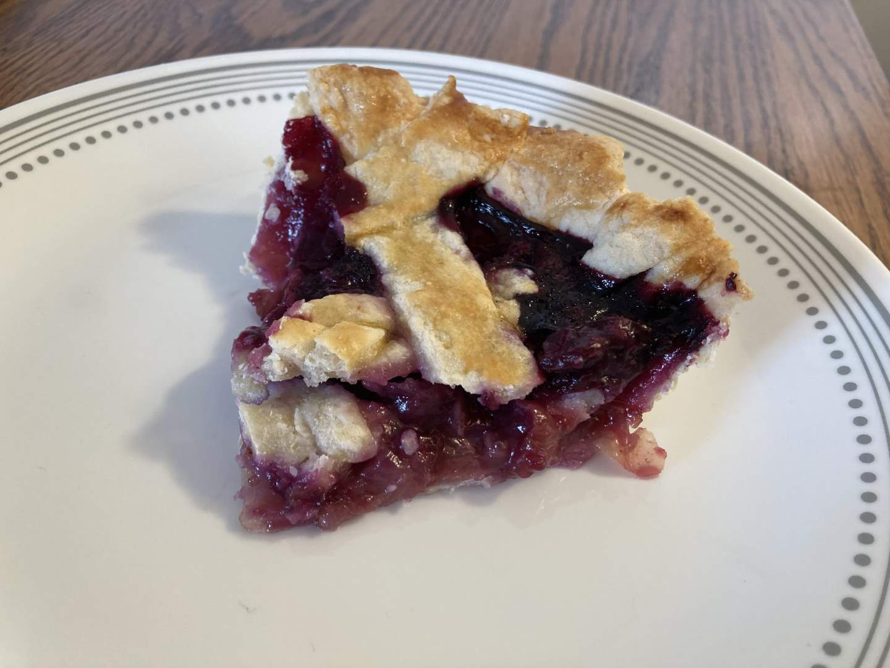

Pie 35: Green Grape & Blueberry
2024-02-25Filling recipe from Food.com
Crust recipe from King Arthur Baking.
Taste:
Difficulty:
Vibes:
Suggested pairing: serve warm with cookies & cream ice cream
“Necessity is the mother of invention and your parents’ refrigerator is the mother of delicious dishes.” - Katie Beth Scott
Several times during this pie-making adventure, we have found ourselves at the end of the week without having made a pie (up a week without a pie-dle). On this particular occasion, we had spent the majority of the day at Ben’s parents’ house. Pie is better shared, so we decided to take advantage of their well-stocked pantry. The most readily available pie ingredients were fruits, specifically oranges, green grapes, and blueberries. Though it was tempting to make another citrus tart, I was intrigued by the concept of a green grape pie. The internet did not disappoint in providing many recipes, but most required unconventional ingredients like einkorn flour or a specific cultivar of green grape. Then, finally, I stumbled across a recipe that called for exactly what we needed and nothing more.
 I washed, halved, and cooked the grapes on the stove with sugar and cornstarch to make a gooey syrup. Once the grapes had softened, I used a meat/potato masher to break them down even further. We added a heaping cup of grapes, let it cook down a little longer, and finally removed it from the heat once it was thick enough to slide slowly off a spatula, but not so thick that it resisted agitation.
With the filling complete and a delicious all-butter crust prepared by the Crust Master Ben Scott, we transferred the hot grape and blueberry mixture into the raw pie shell. Since the base of this pie had been relatively easy and it offered a smooth surface for the top crust, we decided to try our hand at a braided lattice. Ben and I each made one braid. These added visual texture and maintained their shape well during baking. We want to try a fully braided lattice pie in the future!
Though the color and smell of the pie were dominated by the blueberries, the green grapes shone through with a delightful bit of tartness. We would 100% make this pie again. It’s hard to mess up a fruit pie, but we were nonetheless exceedingly pleased with how well this one turned out. So were our family members, who declared it to be the best pie of ours that they had eaten! (I am pretty sure they say that about every pie they get to eat...)
 